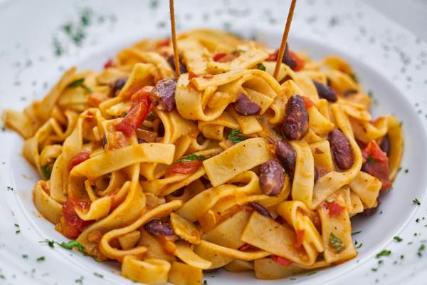

YUMMY Foods
Welcome to Yummy Foods
If the food looks yummy, the food would be scrumptious, delicious, delectable, luscious, great tasting, much more than tasty, really appetizing, lip-smacking; the kind of food to have you licking your lips in anticipation. This is the word everyone wants to hear when bringing food to the table. Yummy food is never unpalatable, plain tasting, distasteful or disgusting.

|

|
| Awesome Taste | Protein Health |
Zesty food has a vivid, spicy, piquant, utterly savory flavor; feels invigorating, stimulating, fresh and reviving. Food with a zesty flavor never soothing or dull; this is exactly the opposite.
Burger Collection Bonanza
Burgers are the one thing we're sure appeases everyone. A good burger can be judged by the bun, its patty, and sauces. Avid burger eaters will agree that when it comes to burgers — the bigger, the better.Whether it's a weeknight dinner or weekend cookout, we always love having burgers on the table.
 |
 |
 |
|
| Non-Veg Burger | Spicy Masala Burger | Sweet Burger | Veg Burger |
So we've gathered some of our favorite burger recipes, from cheddar-stuffed burgers to Hatch Chile Smash Burgers. Swap out the protein in your patties with flavor-packed Italian sausage in these Italian-Sausage Burgers with Garlicky Spinach, with juicy seafood in these shrimp burgers, or load up the toppings with these Japanese-Style Chili Burgers and the Urdaburger. We have an array of recipes to keep every burger night unique.
Fire and Ice with our Fries
French fries, side dish or snack typically made from deep-fried potatoes that have been cut into various shapes, especially thin strips. Fries are often salted and served with other items, including ketchup, mayonnaise, or vinegar. In addition, they can be topped with more substantial fare, such as chili. Poutine is a Canadian dish of french fries covered with cheese curds and gravy.
 |
 |
||
| Hot Fries | Sweet Fries | Masala Fries | Normal Fries |
Total French fries are crispy on the outside, soft and fluffy on the inside. The French fries are made from hand-picked potatoes from the best farms in India. The easy-to-cook snack and its crispy and salty texture make it the best comfort food at parties. We offer fresh and delicious fries that melts-in-the-mouth and it tastes best when served hot. It’s properly packed and frozen to ensure that it retains its taste and holds the crispiness once fried.
Eat Healthy and Stay Healthy
Eating a wide variety of nutritious foods, including fruit, vegetables, nuts, seeds, and lean protein can help support your overall health.Whether you want to overhaul your diet or simply change up your meals, it’s easy to add a number of these foods to your routine.
 |
 |
 |
|
| Fruit Bowl | Veggies Bowl | Greenies | Mixed Bowl |
Many foods are both healthy and tasty. By filling your plate with fruits, vegetables, quality protein sources, and other whole foods, you’ll have meals that are colorful, versatile, and good for you.Many of the foods above make a great snack while also providing essential nutrients. Some may even aid weight loss.
Do Google and Eat Noodles
Noodles are one of the most important traditional staple foods in Asia. Noodles are typically made from unleavened wheat dough and are stretched, extruded, or rolled, and then cut into varying shapes. Noodles account for approximately 20%–50% of the total wheat consumed in Asia.
 |
 |  |
|
| Ramen | Italian Noodles | Shrimp Noodles | Egg Fried Noodles |
A noodle is a piece of pasta, especially a long, skinny one. You can eat noodles with butter and cheese or sauce, or slurp them from a bowl of soup. Noodles are cut or rolled from a dough that contains some kind of flour — wheat, buckwheat, and rice flour are all commonly used.
Enjoy the Deserts
We’ve all experienced that unmistakable craving for sweets. One minute, you’re just going about your business doing the dishes or reading the paper, and then BAM, you’re suddenly craving something decadent and delicious. If you ever find yourself craving something sweet but can’t really pinpoint the exact dessert you’re in the mood for, it might be a good idea to take a look at the options.
 |
 |
||
| Chocolate Bite | Pudding | Flavoured Cup Cake | Coco Cake |
Have you tried everything desserts have to offer? Do you think there might be a dessert you haven’t yet tasted? We’ve come up with the most popular types of desserts, along with some variations that fall into each category.
Copyright © 2024,Yummy Foods
All Rights Reserved
Developed and Maintained By Sai Neeraj Gunturu